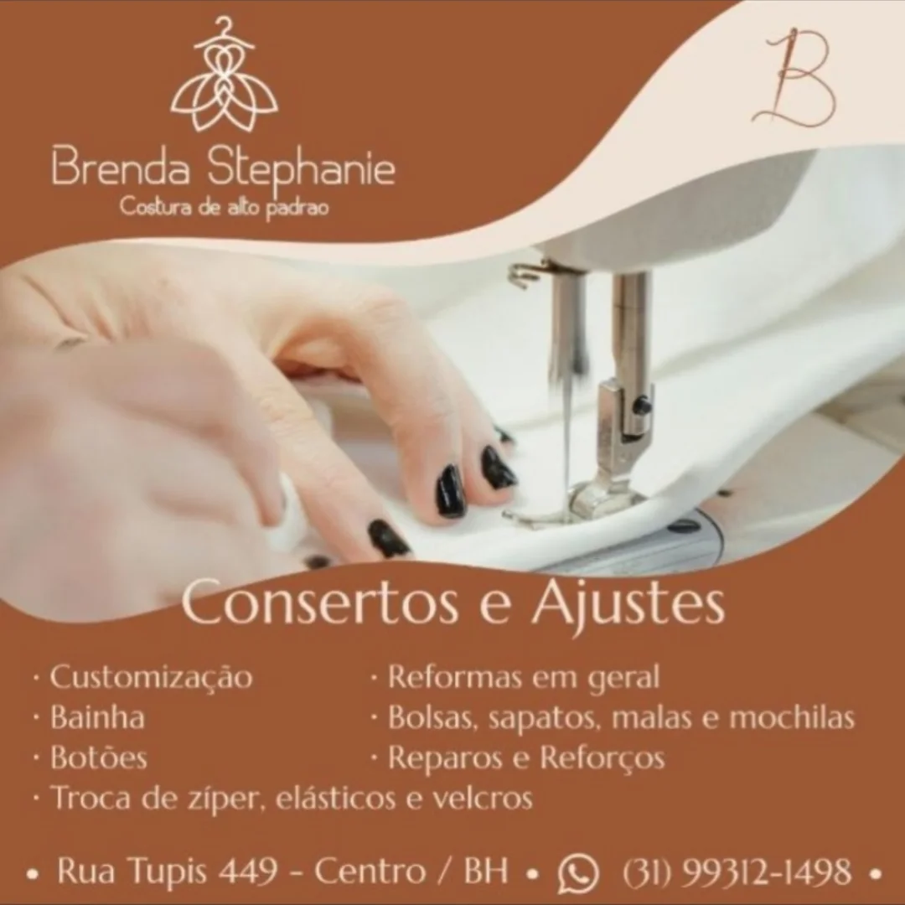
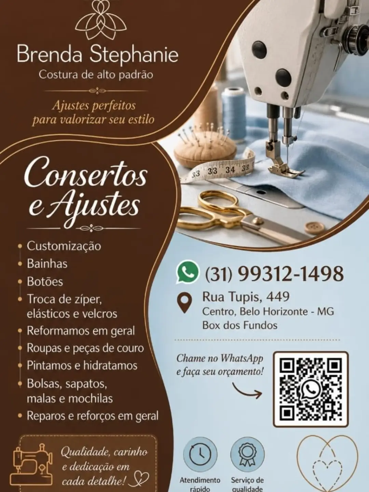

Mostre sua peça
Envie uma foto pelo WhatsApp e conte o que gostaria de ajustar ou transformar.
BRENDA STEPHANIE
COSTURA DE ALTO PADRÃO
BELO HORIZONTE, MG
Ajustar o caimento.
Transformar uma peça.
Continuar uma história.
Costura, ajustes e customização com o cuidado de Brenda Stephanie.
Vamos conversar Explore os serviços
02 — POSSIBILIDADES
Do ajuste do dia a dia à roupa de uma ocasião especial, cada detalhe faz diferença.
Escolha um serviço para saber maisO caimento que você procura, com atenção ao acabamento de cada peça.
Costura feminina e masculina para valorizar seu estilo. Conte sua ideia e consulte as possibilidades de confecção e ajustes para vestidos e peças especiais.
Pedir orçamento ↗Transforme o que já faz parte da sua história. Personalização de roupas, abadás e bonés, conforme a peça e a ideia que você deseja realizar.
Pedir orçamento ↗Reparos e reforços em bolsas, sapatos, malas e mochilas. Pintura e hidratação de peças de couro, mediante avaliação.
Pedir orçamento ↗03 — O UNIVERSO ESTILO ÚNICO
Um pouco do nosso universo, nas imagens compartilhadas no Instagram do atelier.

Consertos & ajustes ↗Sua roupa pode continuar fazendo parte da sua história.
04 — DO PRIMEIRO CONTATO À SUA PEÇA
Envie uma foto pelo WhatsApp e conte o que gostaria de ajustar ou transformar.
Converse sobre as possibilidades, o orçamento e o prazo para o seu serviço.
Combinamos a avaliação presencial e as provas necessárias para o acabamento.
05 — VAMOS CONVERSAR
Traga sua ideia. A gente conversa sobre cada detalhe.
(31) 99312-1498Centro · Belo Horizonte, MG
Box dos fundos
Confirme o horário de atendimento pelo WhatsApp antes da sua visita.
Envie fotos e descreva o serviço pelo WhatsApp. O valor e o prazo são combinados conforme a peça; em alguns casos, é necessária uma avaliação presencial.
Sim. O atelier trabalha com costura e ajustes de peças femininas e masculinas.
Sim. Atendemos bolsas, sapatos, malas e mochilas. Envie uma foto para consultar a possibilidade do reparo antes de trazer a peça.